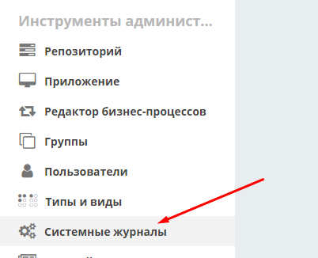

Типы данных¶
В ECOS внедрена собственная система типов, на основе которой настраиваются следующие аспекты:
Форма;
Действия;
Связи;
Тип UI (react/share).
Типы ECOS являются модулями ECOS и располагаются по следующим путям:
В alfresco:
${module_id}/src/main/resources/alfresco/module/${module_id}/model/type/**/*.jsonВ микросервисах:
resources/ecos-app/model/type/**/*.json
Для просмотра существующих типов и их редактирования создан журнал Типы кейсов. Чтобы в него попасть следует открыть меню и перейти в системные журналы:
Пример описания типа¶
{
"id": "base",
"name": "Базовый тип",
"actions": [
"ui/action$edit",
"ui/action$content-download",
"ui/action$record-actions"
],
"associations": [
{
"id": "assoc:associatedWith",
"name": "Связан с",
"direction": "BOTH",
"target": "model/type$base"
}
]
}
Структура типов данных¶
Наследование типов¶
У всех типов должен быть родитель. По умолчанию - model/type@base (базовый тип).
Маппинг старых типов и видов на новые типы кейсов¶
Старые типы и виды кейса записываются в полях tk:type и tk:kind в виде nodeRef. Например:
tk:type = workspace://SpacesStore/contracts-cat-doctype-contract (Договор),
tk:kind = workspace://SpacesStore/contracts-cat-contract-services (Услуги).
Для преобразования в новый тип кейса следует взять значения из этих полей, убрать у каждого из них workspace://SpacesStore/ и оставшиеся части объединить в одну строку через «/» (слева - tk:type, а справа tk:kind): contracts-cat-doctype-contract/contracts-cat-contract-services.
Если tk:kind не задан, то правой части и знака «/» не нужно. Например: contracts-cat-doctype-contract.
При добавлении новых типов кейсов следует учитывать, что тип с tk:kind должен наследоваться от типа без tk:kind чтобы унаследовать его свойства:
Связи (с формой, действиями)¶
Связи наследуются т.е. чтобы добавить связь «Связан с» достаточно указать в качестве parent’а model/type$base т.к. там уже настроена эта связь Связи (associations) настраиваются для отображения, добавления и удаления в виджете связей на карточке документа. Связь описывается следующей структурой:
{
"id": "assoc:associatedWith",
"name": "Связан с",
"direction": "BOTH",
"target": "model/type$base"
}
id в данном случае для Alfresco должно совпадать с QName существующей в модели связи. Для добавления произвольных связей (без обязательного наличия связи в модели) нужна доработка.
Связь с типом Alfresco¶
Чтобы у записей с определенным типом alfresco был нужный тип ECOS можно сделать следующее (на выбор):
Для новых нод:
Сделать аспект, который унаследован от etype:hasType и переопределить там свойство etype:type (!тип следует указывать без emodel/type@ префикса). После этого можно навесить данный аспект на тип
alfrescoи новые ноды будут иметь нужный тип ECOS.В варианте создания добавить атрибут _type=emodel/type@нужный-тип. Новые ноды, создаваемые через данный вариант создания будут иметь нужный тип.
Для новых и старых нод:
Добавить Registrar бин, который зарегистрирует связь тип alfresco → тип ECOS:
ecosTypeService.register(QName nodeType, Function<AlfNodeInfo, RecordRef> evaluator).
Для примера см. конфигурацию ru.citeck.ecos.node.EcosTypeConfiguration.